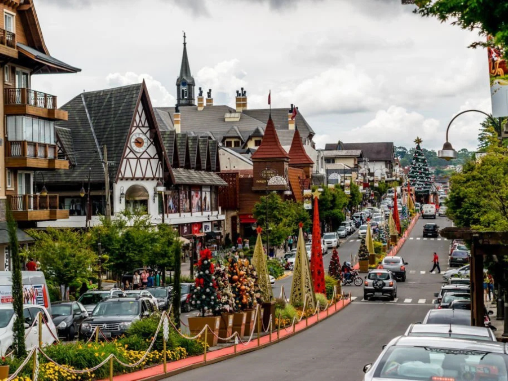

O Rio Grande do Sul é o estado mais ao sul do Brasil e possui uma cultura muito rica, marcada pelas tradições gaúchas, como o chimarrão, o churrasco e as danças típicas. Sua economia é baseada na agricultura, na pecuária e na indústria, destacando-se na produção de soja, arroz, uva e vinho. O estado também é conhecido por suas belas paisagens naturais, como a Serra Gaúcha, os pampas e as praias do litoral sul. Além disso, o Rio Grande do Sul possui cidades importantes, como Porto Alegre, sua capital, que é um grande centro cultural e econômico.
